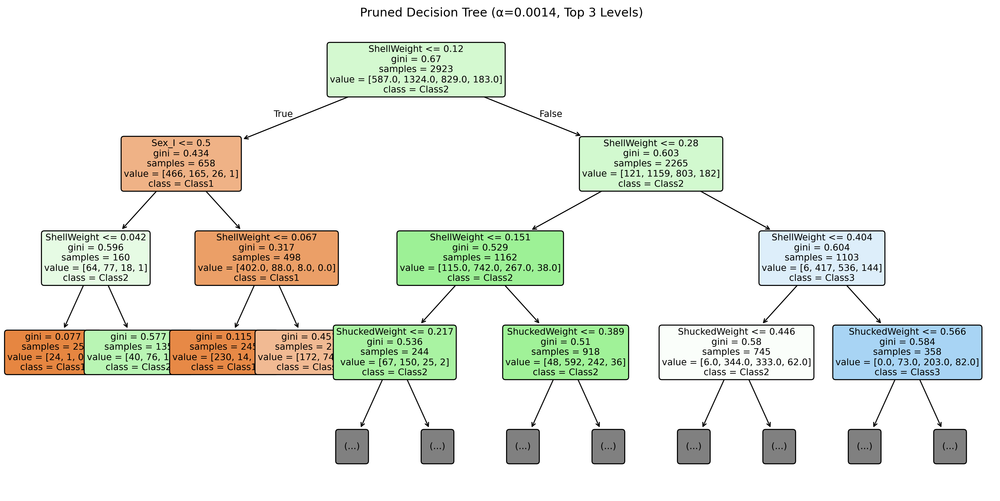
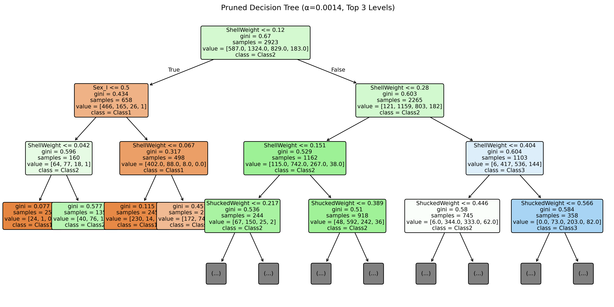
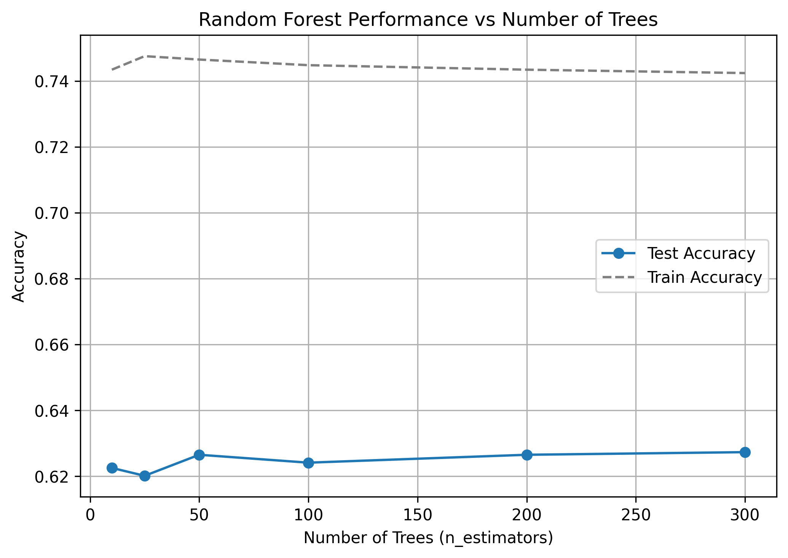
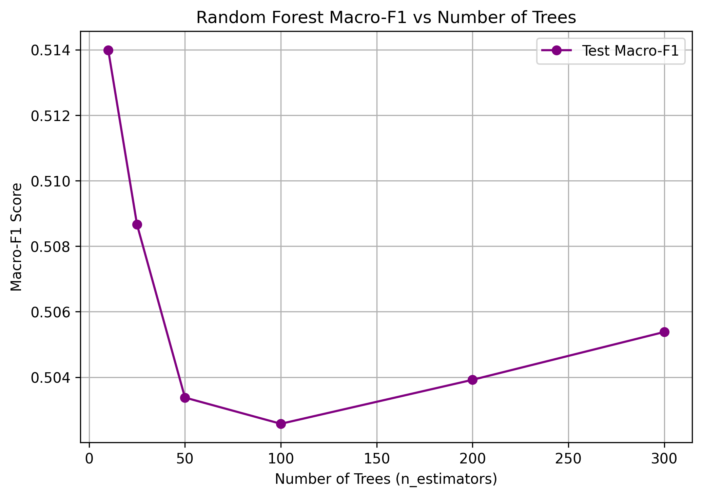
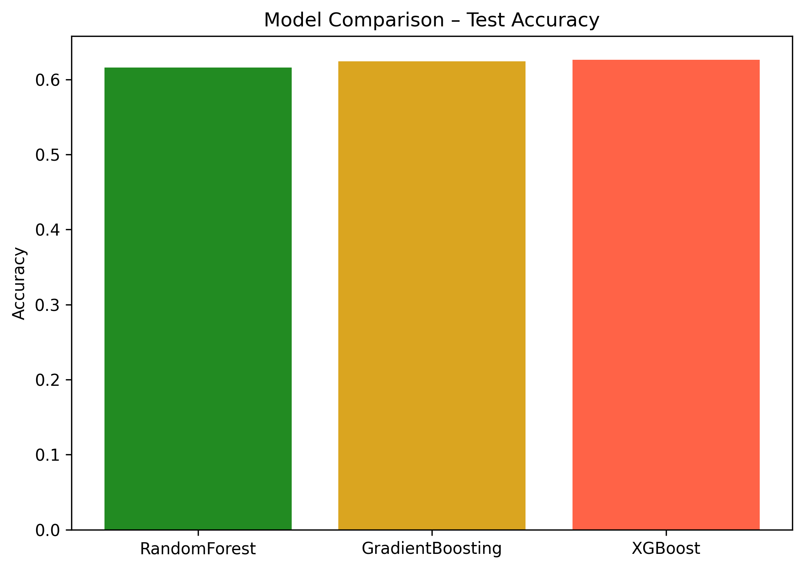
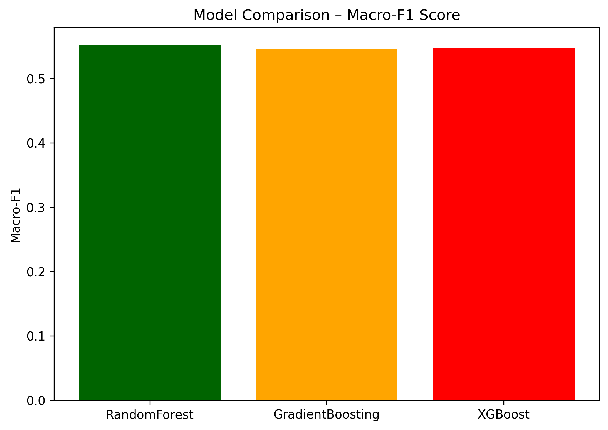
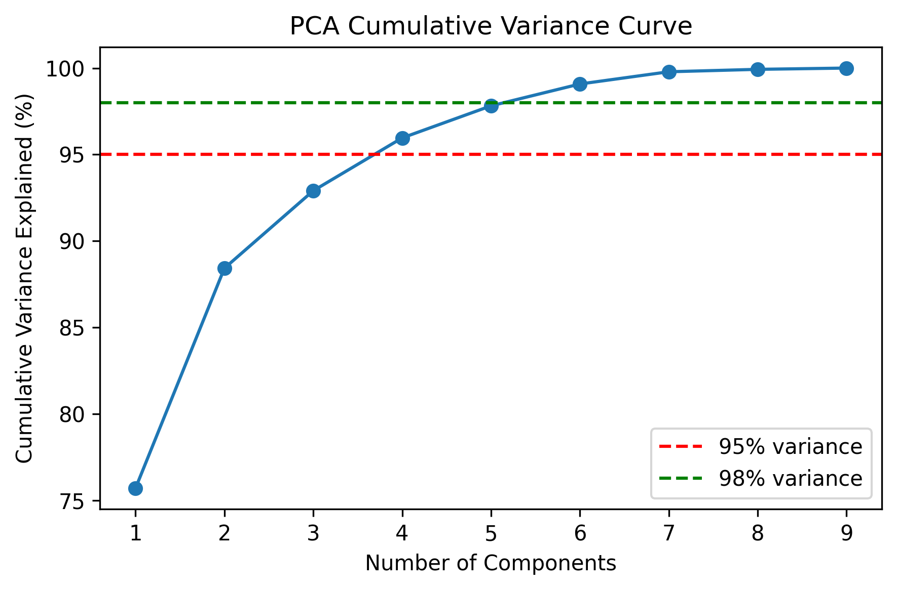
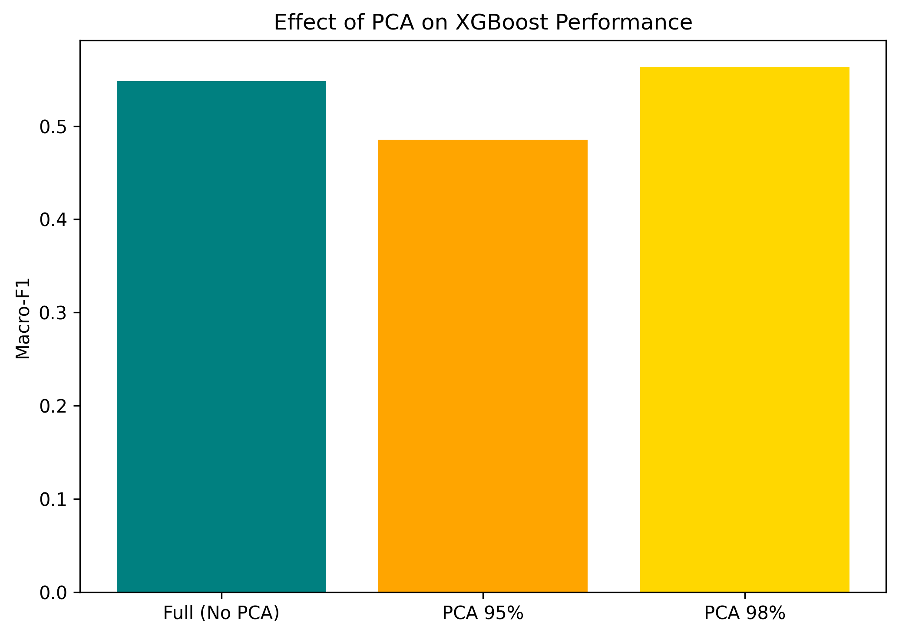
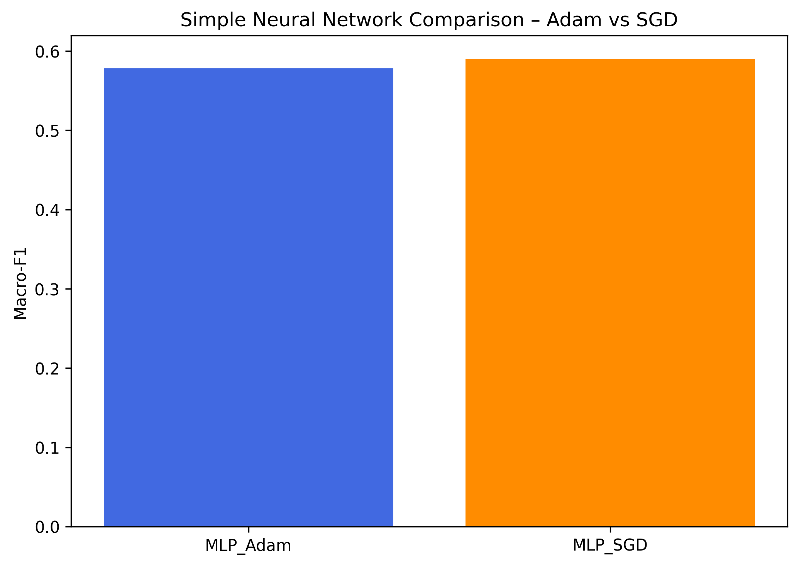
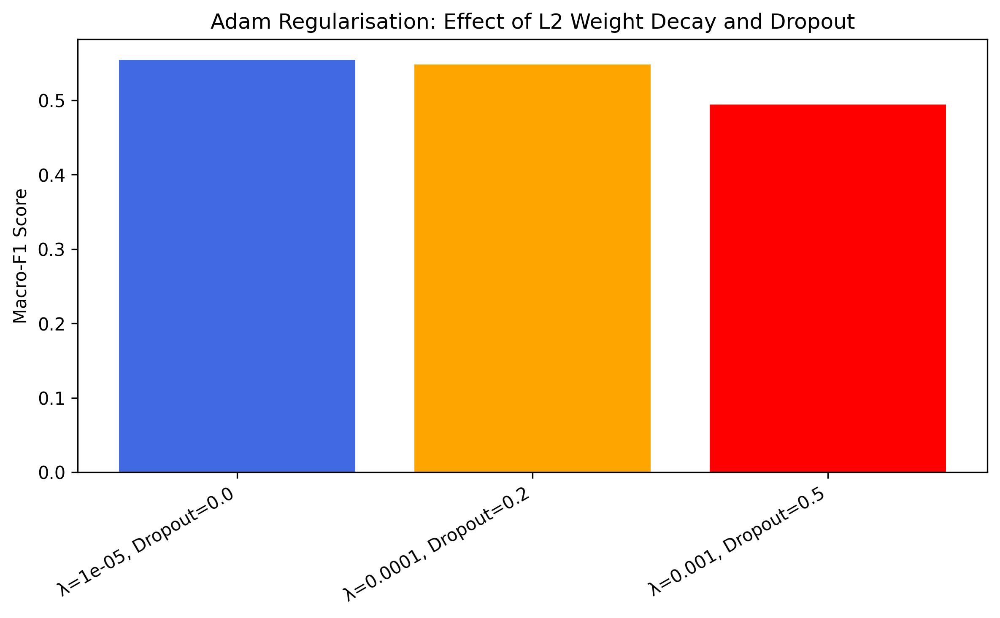

Abalone Ensemble & Tree Report
Generated: 2025-11-03 15:31:12.273951
1. Decision Tree (Top 3 Levels)

2. Cost-Complexity Pruning
 

3. Random Forest – n_estimators vs Performance


4. Ensemble Comparison


5. PCA (95% / 98%)


6. Neural Networks (Adam vs SGD)

7. Adam Regularisation (L2 vs Dropout)
